About
About Projects
Projects Books
Books Games
Games Stories
Stories Store
Store Collection
Collection Notes
Notes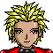Old old art featuring some of the circa characters. Many are characters I've had forever... they've changed a lot over the years. This art was made between the years 2004 and 2010. I liked the concept of Digimon, more than the show itself, and ended up making characters of my own based loosely in that universe. I was a part of the online FDD community then under the name Esse, see some art archived from that time.
The story was centered around Esse, Heramon, Dungamon, Sy, Nemerald, Bonnie, Brad, Dante, back then...
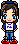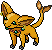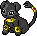 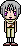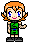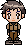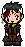
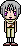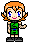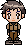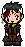
Dungamon's digivolutions:
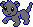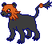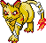
Then Esse and a few other characters were phased out, and I focused on Orion, Token & Fantamon, Kim & Chelsea(my friend's characters), Vincent, Sy, Nemerald, etc...
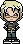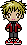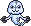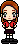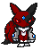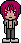
In all, the story was very dramatic. The digital world had become a parallel universe, acting as a sort of limbo between the living world and the dead world.  The 'digimon' of my characters became creatures living in "limbo", and their enemies were demons that had escaped the dead world. My characters had very human problems too, with authorities and each other.
The 'digimon' of my characters became creatures living in "limbo", and their enemies were demons that had escaped the dead world. My characters had very human problems too, with authorities and each other.
 I've separated some of the art(warning art) that featured sensitive material like substance addiction, firearms, death, suicide, blood and gore. I mean, a lot of is actually pretty okay but I prefer to be sure :)!
I've separated some of the art(warning art) that featured sensitive material like substance addiction, firearms, death, suicide, blood and gore. I mean, a lot of is actually pretty okay but I prefer to be sure :)!


Comics
I used to make short comics with these same characters, most are funny but there are a couple serious/dramatic ones.

 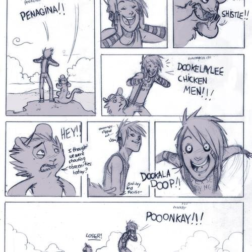
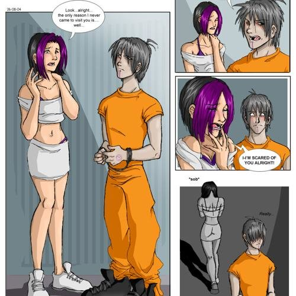
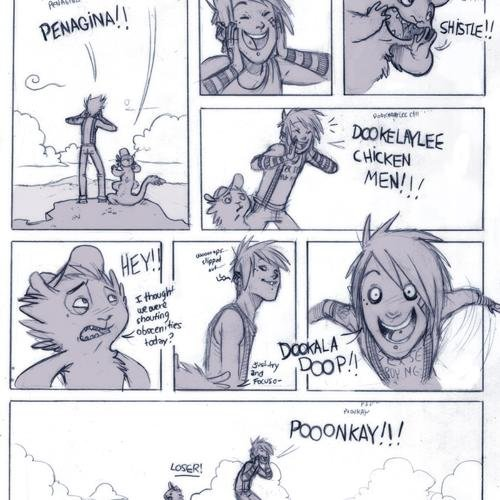
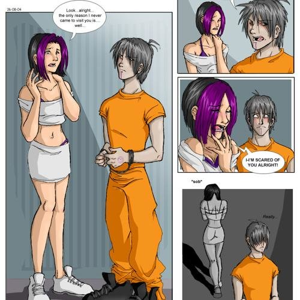


Since there are many, I'm sharing the rest as links.
- Goodbye Dungamon story [193 kB]
- Eda digimon [104.4 kB]
- Another one [92.9 kB]
- Cross/Himura family [80.4 kB]
- Dungarmon fooling no one [58.6 kB]
- Vincent the demon, with Kim and Seir [96.3 KB]
- Sy posing [75.1 KB]
- The kiss [96.5 kB]
- Sy with Dungamon's evolution form [64.8 KB]
- The poster to a story [255.8 KB]
- Willamon hugging jak [80.4 KB]
- Whoop tee fucking do [127.2 KB]
- Dungamon angel [126.3 kB]
- Jurney Mendoza dj white rabbit [49.3 KB]
- Zuccamon and Caleb [80.4 KB]
- Young Esse and Heramon [122.3 KB]
- The toaster speaks [85.5 KB]
- Sy and Esse [146.5 KB]
- Dante and Sy [146.5 KB]
- Orion and Daki [183.3 KB]
- Token and Fantamon [99.2 KB]
- Sy and Noirmon [473 KB]
- Memerald design sheet [267.6 KB]
- Let me tell you something about god [295 KB]
- Bonnie Bowler and digimon [194.6 KB]
- Boushimon [259.8 KB]
- The fight [261.6 KB]
- Cardinal Malvado [298.1 KB]
- Change christmas [298.1 KB]
- The whole gang [298.1 KB]
- Arresting Orion [298.1 KB]
- Arresting Sy [298.1 KB]
- Dante and Vincent [298.1 KB]
- Galerumon evolution [298.1 KB]
- Dungamon [298.1 KB]
- Sy and Token [298.1 KB]
- Token and Orion [298.1 KB]
- Many faces of Seir [298.1 KB]
- Evolution of Fantamon [298.1 KB]
- Fdd assemble [298.1 KB]
- Fight [298.1 KB]
- Take a pose [298.1 KB]
- Happy 4th bday [298.1 KB]
- Hercumon is dying after a big battle [298.1 KB]
- The crew of Inferno [298.1 KB]
- Jakalmon [298.1 KB]
- Landlocked lovers yearn token [298.1 KB]
- This is what happens [298.1 KB]
- Vaccine warriors [298.1 KB]
- Willamon and Sy [298.1 KB]
- Orion's digivice [298.1 KB]
- Hell golfing [298.1 KB]